Model-based RL
Using world models to augment learning
Summary of model-free methods
- Model-free methods allow to solve MDPs without knowing anything about the model.
| Algorithm | Action Space | Exploration | On- or Off-Policy | Sample Efficiency | Learning Stability | Policy Optimality |
|---|---|---|---|---|---|---|
| DQN | Discrete | \(\epsilon\)-greedy | Off-policy | + | - | + |
| A3C | Discrete and Continuous | Gaussian policy | On-policy | - | - | + |
| DDPG | Continuous | Exploration noise | Off-policy | + | - | + |
| TD3 | Continuous | Exploration noise | Off-policy | ++ | + | +++ |
| PPO | Discrete and Continuous | Gaussian policy | On-policy | + | +++ | +++ |
| SAC | Continuous | Soft policy | Off-policy | +++ | - | +++ |
- In practice, you should use PPO if you do not really care about sample efficiency and prefer learning stability (ChatGPT). It works well for both discrete and continuous spaces.
- For continuous ction spaces (robotics), you should prefer TD3 or SAC, TD3 being less computationally expensive, but SAC being more sample efficient.
1 - Model-based RL
Model-free vs. model-based RL

- In model-free RL (MF) methods, we do not need to know anything about the dynamics of the environment to start learning a policy:
\[p(s' | s, a) \; \; r(s, a, s)\]
We just sample transitions \((s, a, r, s')\) from the environment and update either Q-values or a policy network.
The main advantage is that the agent does not need to “think” when acting: just select the action with highest Q-value (reflexive behavior).
The other advantage is that you can use MF methods on any MDP: you do not need to know anything about them.
MF methods are very slow (sample complexity): as they make no assumption, they have to learn everything by trial-and-error from scratch.
MF methods are not safe: it is very hard to use external knowledge to avoid exploring dangerous actions.
Model-free vs. model-based RL
- If you had a model of the environment, you could plan ahead (what would happen if I did that?) and speed up learning (do not explore stupid ideas): model-based RL (MB).
- In chess, players plan ahead the possible moves up to a certain horizon and evaluate moves based on their emulated consequences.

- In real-time strategy games, learning the environment (world model) is part of the strategy: you do not attack right away.
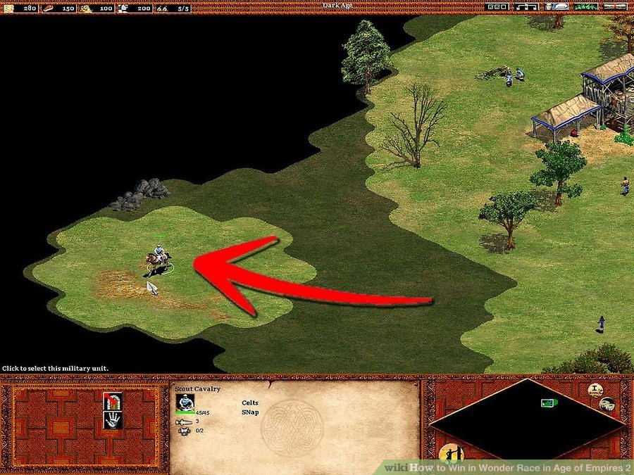
Two families of deep RL algorithms

2 - Learning the world model
Learning the world model
Learning the world model is not complicated in theory.
We just need to collect enough transitions \(s_t, a_t, s_{t+1}, r_{t+1}\) using a random agent (or during learning) and train a supervised model to predict the next state and reward.
\[s', r = M(s, a)\]
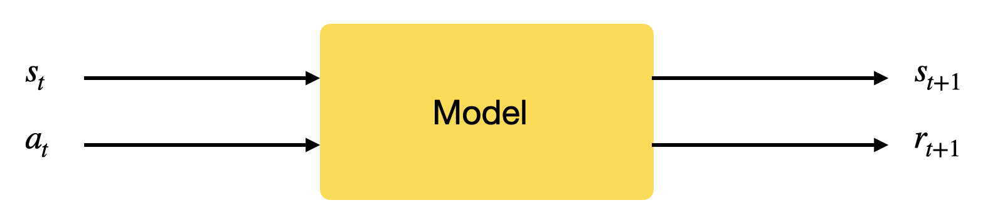
Such a model is called the dynamics model, the transition model or the forward model.
- What happens if I do that?
The model can be deterministic (use neural networks) or stochastic (use Gaussian Processes).
Given an initial state \(s_0\) and a policy \(\pi\), you can unroll the future using the local model.
Learning from imaginary rollouts

Once you have a good transition model, you can generate rollouts, i.e. imaginary trajectories / episodes using the model.
Given an initial state \(s_0\) and a policy \(\pi\), you can unroll the future using the model \(s', r = M(s, a)\).
\[ \tau = s_0 \xrightarrow[\pi]{} a_0 \xrightarrow[M]{} s_1 \xrightarrow[\pi]{} a_1 \xrightarrow[\pi]{} s_2 \xrightarrow[]{} \ldots \xrightarrow[M]{} s_T \]
- You can then feed these trajectories to any optimizer (classical or model-free RL algorithm) that will learn to maximize the returns.
\[\mathcal{J}(\theta) = \mathbb{E}_{\tau}[R(\tau)]\]
The only sample complexity is the one needed to train the model: the rest is emulated.
Drawback: This can only work when the model is close to perfect, especially for long trajectories or probabilistic MDPs. See MPC in the next chapter.
3 - Dyna-Q
Dyna-Q
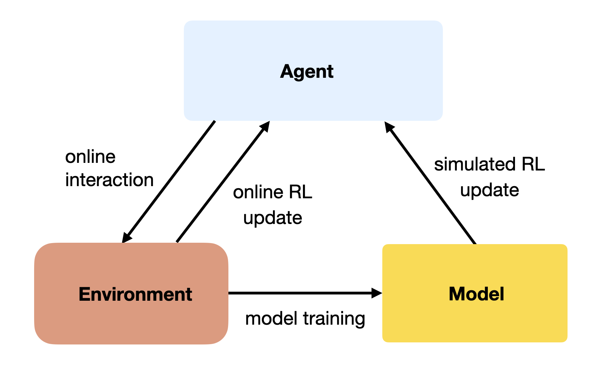
A simple approach to MB RL is to augment MF methods with MB rollouts.
The MF algorithm (e.g. Q-learning) learns from transitions \((s, a, r, s')\) sampled either with:
real experience: interaction with the environment.
simulated experience: simulation by the model.
If the simulated transitions are good enough, the MF algorithm can converge using much less real transitions, thereby reducing its sample complexity.
The Dyna-Q algorithm is an extension of Q-learning to integrate a model \(M(s, a) = (s', r')\).
The model can be tabular or approximated with a NN.
Dyna-Q
Initialize values \(Q(s, a)\) and model \(M(s, a)\).
for \(t \in [0, T_\text{total}]\):
Select \(a_t\) using \(Q\), take it on the real environment and observe \(s_{t+1}\) and \(r_{t+1}\).
Update the Q-value of the real action:
\[\Delta Q(s_t, a_t) = \alpha \, (r_{t+1} + \gamma \, \max_a Q(s_{t+1}, a) - Q(s_t, a_t))\]
- Update the model:
\[M(s_t, a_t) \leftarrow (s_{t+1}, r_{t+1})\]
for \(K\) steps:
Sample a state \(s_k\) from a list of visited states.
Select \(a_k\) using \(Q\), predict \(s_{k+1}\) and \(r_{k+1}\) using the model \(M(s_k, a_k)\).
Update the Q-value of the imagined action:
\[\Delta Q(s_k, a_k) = \alpha \, (r_{k+1} + \gamma \, \max_a Q(s_{k+1}, a) - Q(s_k, a_k))\]
Dyna-Q

It is interesting to notice that Dyna-Q is very similar to DQN and its experience replay memory.
In DQN, the ERM stores real transitions generated in the past.
In Dyna-Q, the model generates imagined transitions based on past real transitions.
4 - I2A - Imagination-augmented agents
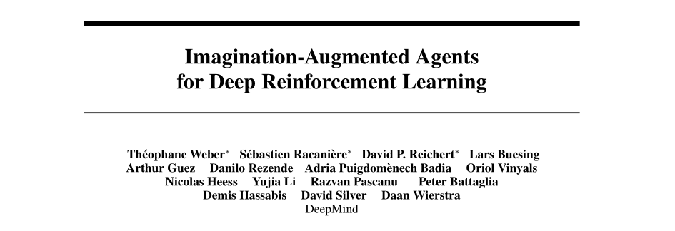
I2A - Imagination-augmented agents
- I2A is a model-based augmented model-free method: it trains a MF algorithm (A3C) with the help of rollouts generated by a MB model.
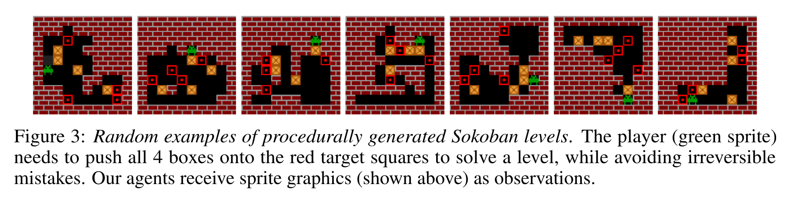
They showcase their algorithm on the puzzle environment Sokoban, where you need to move boxes to specified locations.
Sokoban is a quite hard game, as actions are irreversible (you can get stuck) and the solution requires many actions (sparse rewards).
MF methods are bad at this game as they learn through trials-and-(many)-errors.
Sokoban
{{< youtube fg8QImlvB-k >}}I2A - Imagination-augmented agents
- The model learns to predict the next frame and the next reward based on the four last frames and the chosen action.
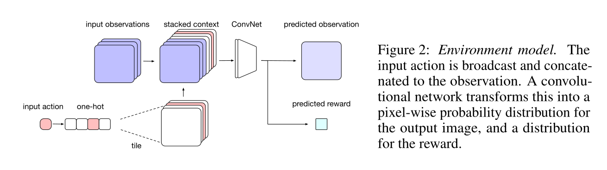
It is a convolutional autoencoder, taking additionally an action \(a\) as input and predicting the next reward.
It can be pretrained using a random policy, and later fine-tuned during training.
I2A - Imagination-augmented agents
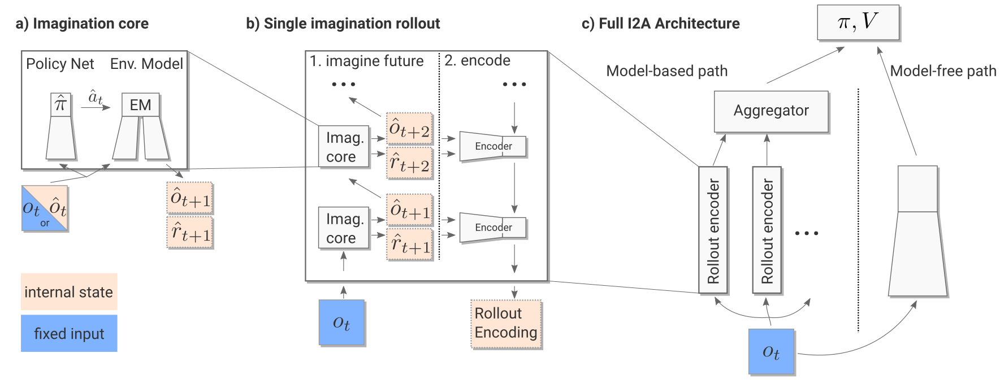
I2A - Imagination-augmented agents
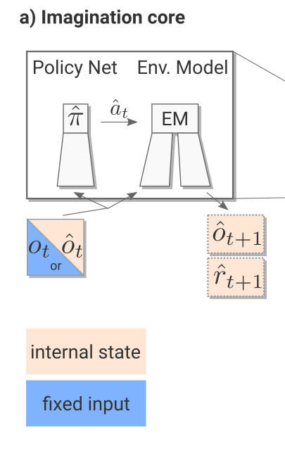
The imagination core is composed of the environment model \(M(s, a)\) and a rollout policy \(\hat{\pi}\).
As Sokoban is a POMDP (partially observable), the notation uses observation \(o_t\) instead of states \(s_t\), but it does not really matter here.
The rollout policy \(\hat{\pi}\) is a simple and fast policy. It does not have to be the trained policy \(\pi\).
It could even be a random policy, or a pretrained policy using for example A3C directly.
In I2A, it is a distilled policy from the trained policy \(\pi\) (see later).
Take home message: given the current observation \(o_t\) and a policy \(\hat{\pi}\), we can predict the next observation \(\hat{o}_{t+1}\) and the next reward \(\hat{r}_{t+1}\).
I2A - Imagination-augmented agents
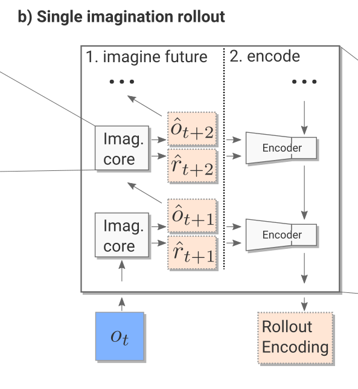
- The imagination rollout module uses the imagination core to predict iteratively the next \(\tau\) frames and rewards using the current frame \(o_t\) and the rollout policy:
\[o_t \rightarrow \hat{o}_{t+1} \rightarrow \hat{o}_{t+2} \rightarrow \ldots \rightarrow \hat{o}_{t+\tau}\]
The \(\tau\) frames and rewards are passed backwards to a convolutional LSTM (from \(t+\tau\) to \(t\)) which produces an embedding / encoding of the rollout.
The output of the imagination rollout module is a vector \(e_i\) (the final state of the LSTM) representing the whole rollout, including the (virtually) obtained rewards.
Note that because of the stochasticity of the rollout policy \(\hat{\pi}\), different rollouts can lead to different encoding vectors.
I2A - Imagination-augmented agents
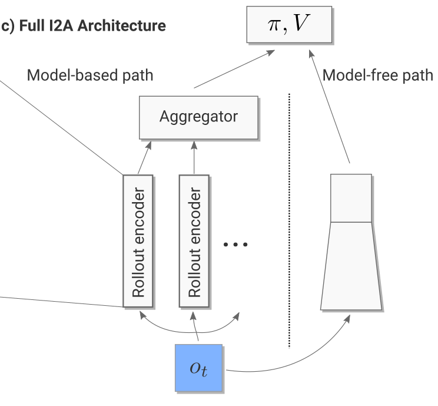
For the current observation \(o_t\), we then generate one rollout per possible action (5 in Sokoban):
- What would happen if I do action 1?
- What would happen if I do action 2?
- etc.
The resulting vectors are concatenated to the output of model-free path (a convolutional neural network taking the current observation as input).
Altogether, we have a huge NN with weights \(\theta\) (model, encoder, MF path) producing an input \(s_t\) to the A3C module.
- We can then learn the policy \(\pi\) and value function \(V\) based on this input to maximize the returns:
\[\nabla_\theta \mathcal{J}(\theta) = \mathbb{E}_{s_t \sim \rho_\theta, a_t \sim \pi_\theta}[\nabla_\theta \log \pi_\theta (s_t, a_t) \, (\sum_{k=0}^{n-1} \gamma^{k} \, r_{t+k+1} + \gamma^n \, V_\varphi(s_{t+n}) - V_\varphi(s_t)) ]\]
\[\mathcal{L}(\varphi) = \mathbb{E}_{s_t \sim \rho_\theta, a_t \sim \pi_\theta}[(\sum_{k=0}^{n-1} \gamma^{k} \, r_{t+k+1} + \gamma^n \, V_\varphi(s_{t+n}) - V_\varphi(s_t))^2]\]
I2A - Imagination-augmented agents
The complete architecture may seem complex, but everything is differentiable so we can apply backpropagation and train the network end-to-end using multiple workers.
It is the A3C algorithm (MF), but augmented by MB rollouts, i.e. with explicit information about the future.
Policy distillation
The rollout policy \(\hat{\pi}\) is trained using policy distillation of the trained policy \(\pi\). The small rollout policy network with weights \(\hat{\theta}\) tries to copy the outputs \(\pi(s, a)\) of the bigger policy network (A3C).
This is a supervised learning task: just minimize the KL divergence between the two policies:
\[\mathcal{L}(\hat{\theta}) = \mathbb{E}_{s, a} [D_\text{KL}(\hat{\pi}(s, a) || \pi(s, a))]\]
- As the network is smaller, it won’t be as good as \(\pi\), but its learning objective is easier.
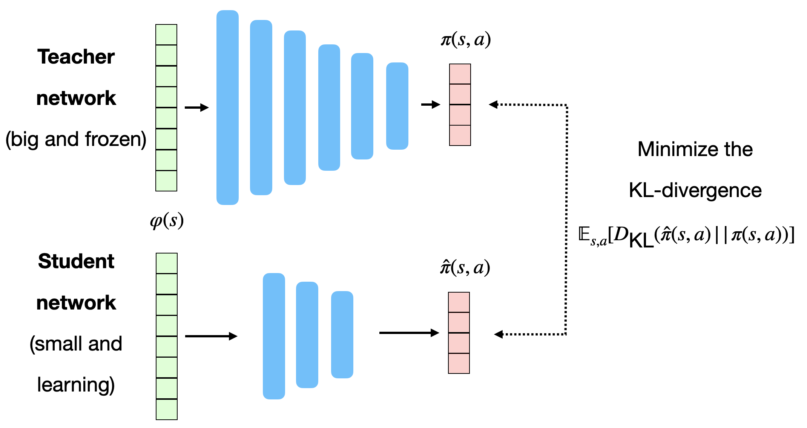
Distral : distill and transfer learning
FYI: distillation can be used to ensure generalization over different environments.
Each learning algorithms learns its own task, but tries not to diverge too much from a shared policy, which turns out to be good at all tasks.
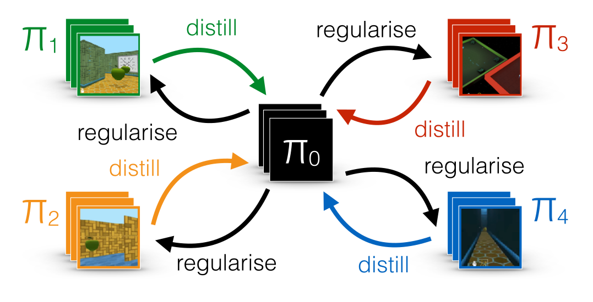
I2A - Imagination-augmented agents
Unsurprisingly, I2A performs better than A3C on Sokoban.
The deeper the rollout, the better.
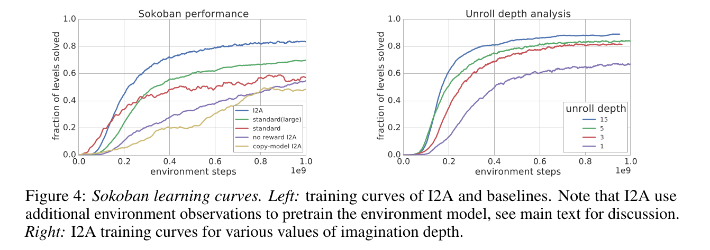
I2A - Imagination-augmented agents
- The model does not even have to be perfect: the MF path can compensate for imperfections.
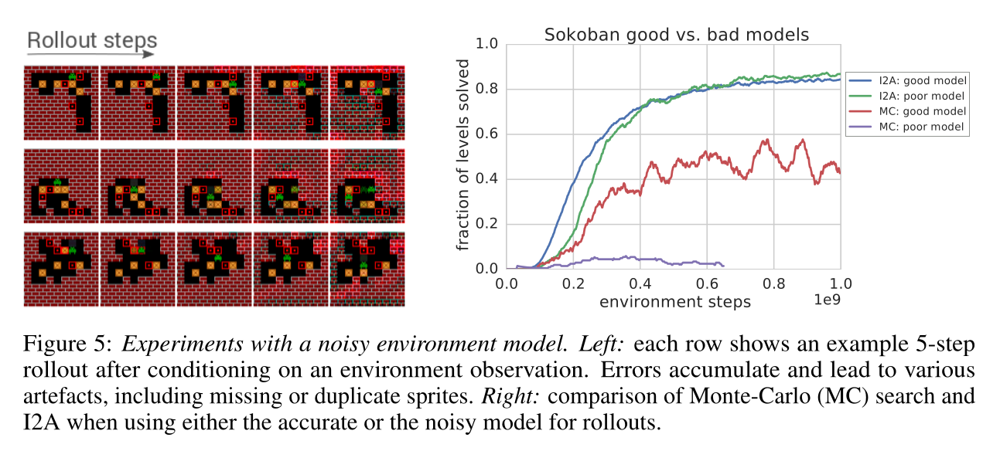